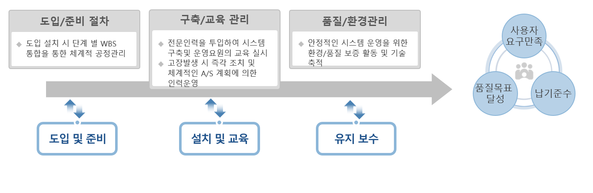
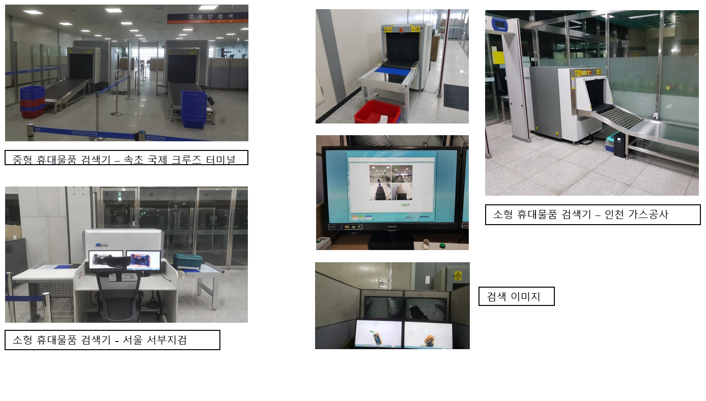

휴대물품 검색기 시스템
휴대물품 검색 시스템이란
공항, 기차역, 버스 정류장, 정부 기관, 대사관, 회의장, 우체국, 학교 등 공공 시설 또는 다중 이용시설에서
공공의 안전을 위하여 개인이 휴대하는 휴대물품을 사전에 검사 하여 사회안전 위해 물품 휴대 및 소지를 차단하는 보안 검색
분야에서 널리 사용됩니다 즉 개인 휴대물품을 열지 않은 상태에서 X-Ray를 사용하여 내부를 투시함으로써 마약, 총기,도검 및
폭발물류와 같은 불법 사회 안전 위해 물품색출 신속하고 효과적으로 적발하기 위한 장비 임.
기술의 세부 분야
휴대물품 검색 시스템을 구축하고 운영해 나가기 위해서는 설치 환경에 맞는 구축경험이 풍부한 전문인력을 투입하여
기존 시설 내에서 가장 효과적으로 운용 되도록 설치 되어야 하며, 운용 요원에게 사용법에 대한 충분한 교육을 실시하고 고장
발생시 즉각 적인 조치가 가능하도록 유지보수 관리가 이루어져야 한다 .

휴대물품 검색 시스템 소개
공항, 항만, 터미널, 보안구역에서 X-Ray를 이용한 검색 시스템으로 마약, 총기류 등 사회 안전 위해 물품의
반입, 휴대를 차단할 수 있는 첨단 솔루션
